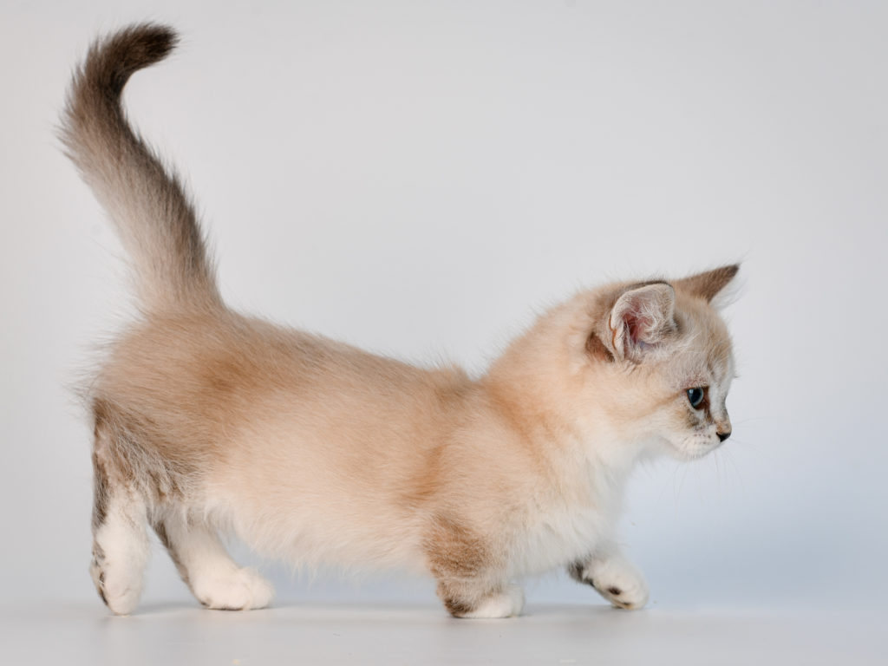

- 1
- 2
- 3
- 4
- 5
- 6

canvas 는 웹페이지 그래픽 표현 방법
이미지 태그르르 출력할 때는 img태그를 이용하고 그래픽 에니메이션이나 사용자 그래픽이 필요한 경우 canvas활용
캔버스 그래픽 기능을 이용하여 선,원,곡선,삭가형 이미지 2차원 문자 등 자유롭게 그려낼 수 있음
실시간 그래프,애니메이션,지도,게임 등을 간단하게 플러그인 없이 구현 가능하다
캔버스에 그래픽 그리기는 js코드만 가능하다
p태그 문장
본문 컨텐츠 영역
| 1 | 2 |
|---|---|
| 1번 데이터 | 2번 데이터 |
| 샴 | 먼치킨 | 메인쿤 |
|---|---|---|
| 대체로 크림색이지만 눈에 다크서클이 낀 듯 코 주변,귀,꼬리,발 등에 특징적인 짙은 털이나고 사파이어 색 눈이 특징이다. | 고양이 중 유일하게 팔다리가 짧고 허리가 긴 종이기 때문에 달리기,점프,공격 능력들이 일반 고양이들에 비해 떨어진다. | 일반 고양이들은 1년 만에 성장이 멈추지만 메인쿤은 3~5세까지 성장하기 때문에 고양이 중 가장 큰 대형묘로 알려져 있고 날렵하고 긴 몸매이며 장묘종이여서 풍성한 털이 특징이다. |


textarea
이미지 버튼
123CSS 적용 타겟 샘플 문장입니다.
Selector는 CSS스타일 시트의 이름 규칙,스타일 시트의 블록은 중괄호로 처리한다. CSS 스타일은 프로퍼팅와 값을 쌍으로 설정한다. CSS는 200개 정도의 프로퍼티(속성)이 있음 계속 추가되는 중
CSS의 주석은 /*~~~~*/로 주석 처리 가능
스타일 적용 방법 1: head내에서 style 태그로 구성하는 방법
스타일 적용 방법 2: 태그의 style 속성에 직접적용 하는 방법
스타일 적용 방법 3 : 외부 스타일 시트를 import 혹은 link로 불러와서 사용하는 방법
스타일 태그를 통해 스타일 시트를 만들 때는 head 태그 내에 style태그를 작성한다.
CSS 스타일 시트만 떼어내어, CSS 확장자를 가진 파일을 만들어 스타일 시트를 넣어 저장하고 필요할 때 불러와서 사용할 수 있음
link 의 href 속성에 적용하려는 외부 스타일 시트 파일의 경로, 파일명을 작성한다
typt속성에 text/css 속성 값을 적용한다
rel속성에 stylesheet속성값을 적용한다
link태그는 종료태그가 없고 head태그 내에서 작성한다
CSS스타일 시트에는 규칙이 있다
1. CSS스타일은 부모 태그로 부터 상속된다. 자신을 둘러싸는 태그를 부모태그 혹은 부모요소(element)라고 하는 데, 부모 시트에 적용된 스타일은 자식 요소에 상속 적용됨.
브라우저는 각 태그에 대한 디폴트 스타일을 가지고 있음. 따라서 개발자가 따로 지정하는 스타일이 없으면 브라우저 기본 디폴트 값을 통한 스타일이 적용됨. 예) padding, margin는 0으로 초기화 직접 해줌
특정 태그에는 4가지 종류의 스타일 시트가 적용될 수 있음
1.브라우저 디폴트 2. 외부 CSS파일 시트 3. 내부 스타일 시트 4. 인라인 스타일 시트
스타일 합치기란 4가지 스타일 시트가 태그에 동시 적용될 때 스타일이 합쳐져 적용됨을 의미
스타일 오버라이딩이란 덮어쓰기의 의미로 4가지 루트 중 같은 속성(예를들어 폰트크기)가 여러번 적용되면 우선 순위가 높은 스타일 시트로 덮어씌워 짐
우선순위 1번 부터 4번으로 갈수록 높아짐
html 태그 모양을 꾸밀 스타일 시트를 적용하는 기능
h3{~~~~~~~~~~~~~}형태에서는 셀렉터 이름이 h3인 것
셀렉터에는여러 유형이 있다. h3처럼 태그 이름이 셀렉터가 되기도 하고, id 속성이나 클래스 속성의 값을 셀렉터로 이용하기도 함. 또 여러 셀렉터를 조합하여 사용할 수 있음
자식 셀렉터: 자식 셀렉터는 부모 자식 관계인 두 셀렉터를 > 기호로 조합한 형태
자손 셀렉터: 자손 관계인 2개 이상의 태그를 나열한 형태
전체 셀렉터: *전체 선택
속성 셀렉터: HTML태그의 특정 속성 attribute에 대해 일치하는 태그에만 스타일 적용되도록 선택하는 셀렉터
가상 셀렉터: 특정 상황일 떄를 선택하게 하는 셀렉터
CSS에서 색상을 표현하는 체계는 RGBA,RGA,HSL(=HSB) 등
주로 RGB체계를 사용한다
RGB표현은 16진수 표기법 #FFFFFF으로 표현 가능
10진수 표기법은 RGB(255,255,255)로 표현 가능
색상 이름표에 따른 색상명 yellow등으로 표현 가능
color: 텍스트 색상 background-color: 배경색상 border-color: 테두리 색상

텍스트 관련 속성 대표적 예 text-ident / text-align / text-decoration
text-ident의 값: 길이 값 or 퍼센트 단위
text-align: left or right or center or justify
text-decoration: none or underline or overline or line-through
CSS 스타일 시트에서 단위를 작성하는 (크기,두께,높이 등) 단위에는 px,%,em 등 여러 방법이 있음
em: 배수 브라우저가 폰트 사이즈 16px -> 1em 폰트 사이즈의 1배
rem: 배수 브라우저가 폰트 사이즈 16px -> 1em 폰트 사이즈의 1배
rem과 em의 차이점: rem과 em은 모두 상대적 크기 단위, 요소의 크기를 부모 요소의 크기에 비례하여 조정한다, rem은 루트(html)의 폰트 크기를 기준으로 하고 em은 부모 요소의 폰트 크기를 기준으로 한다. 루트요소(html)의 폰트 크기가 16px(기본 값)일 때 1rem은 16px만큼을 의미하고 em은 부모로부터 상속받은 폰트 크기에 따라 배율이 결정되는 것
%: 퍼센트
px: 픽셀 수
cm: 센티미터
mm: 밀리미터
in: 인치
pt: 포인터 1pt=1/72in
deg: 각도 -> 변환효과 등에서 쓰임
HTML 태그는 박스 모델로 표현되고 4가지의 영역으로 나뉜다.
컨텐츠 영역: HTML 태그 내부 텍스트나 이미지 등 본문 컨켄츠
패딩 영역: 콘텐츠를 둘러싸고 있는 내부의 여백
보더 영역: 테두리 여역으로 패딩 외부의 외곽선
마진 영역: 박스의 맨 바깥 영역으로 인접 요소와의 거리
컨텐츠 크기 : width, height
패딩 크기: padding-top, padding-left, padding-bottom,paddig-right
테두리 크기: border-top-width (4 방향)
여백 크기 : margin-top(4 방향)
단축 프로퍼티(4 방향 공통 지정): padding,margin,border-width
스타일 관련: border-style
색상 관련: border-color
테두리 단축 플퍼티: border
패딩의 색은 따로 없으며 태그의 배경색이 패딩에 칠해진다. 패딩은 컨텐츠의 확장
여백은 투명하게 처리되어 부모태그의 배경색이 비춰보인다.
테두리 색은 개발자들이 임의로 설정하여 줄 수 있음. border-color
123
박스 모델
border-radius: 테두리 모서리 기울기
배경 색상: background-color 값: 컬러코드/rgb/16진수 컬러
배경 이미지: background-image 값:url이미지 주소
배경 이미지 위치: background-position 값: left top이 디폴트이고 left center/ left bottom / right center / right botton/center top / center center 등 지정 가능
배경 이미지 크기: background-size 값 100px 100px 가로 세로
배경 이미지 반복성 설정: background-repeat 값: repeat-y/repeat-x/no-repeat/repeat(디폴트)
background 단축 프로퍼티 값: red url(이미지 주소) center center 100px 100px repeat-x
텍스트에 그림자 효과
text-shadow
텍스트 쉐도우 프로퍼티는 h-shadow / v-shadow / blur-radius / corlor 등 속성 값을 줄 수 있음
박스 쉐도우
box-shadow: h-shadow v-shadow blur-radius spread-radius corlor 등 속성 값을 줄 수 있음
HTML 요소들은 웹 페이지에 작성한 순서대로 출력되는 것이 기본 값
기본 구조에 CSS를 적용하여 배치를 변경할 순 있음
배치관련 속성 display / left / top / bottom / right / fioat / z-index / visibility/ overflow 등이 있음
예를 들어 div 태그의 기본 속성이 블럭 형태인 것을 display 속성을 활용해서 span태그 처럼 인라인 현태로 변경할 수 있음
대표적인 블록 태그: p / div / ul
대표적인 인라인 태그: span / a / img
앞에서 개발자 도구를 통해 봤던 박스 모델에 따라 브라우저는 각 HTML 태그를 하나의 박스로 다룬다
기본적으로 브라우저는 블록태그는 블록 박스로 인라인 태그는 인라인 박스로 구성한다
블록은 새로운 라인에서 브라우저의 좌측 끝부터 우측 끝까지 영역을 차지하려는 속성
인라인은 해당 인라인 태그가 포함되는 컨텐츠 만큼 영역을 차지하려는 속성
기본 블럭 속성과 인라인 속성을 혼용한 형태인 inline-block이라는 형태도 display속성을 통해 설정 가능
1. display:block 속성 설정 => 항상 새라인에서 시작한다. 블록 박스 내에서만 배치, 앞에 다른 요소 배치 불가능, width와 height로 크기 조절 가능, padding/matgin/border 조절 가능
2. display:inline 속성 설정=> 새 라인에서 시작하지 않음, 모든 박스 내 배치 가능, 앞에 다른 요소 배치 가능,width와 height로 크기 조절 불가능, padding/matgin/border 조절 불가능
3. display:inline-block 속성 설정=> 새 라인에서 시작하지 않음, 모든 박스 내 배치 가능, 앞에 다른 요소 배치 가능, width와 height로 크기 조절 가능, padding/matgin/border 설정 가능
span 태드를 block으로 바꾸기디본 HTML 선언 순서 구조 대로 출력되는 형태를 nomal flow
position 속성을 사용하면 nomal flow를 무시하고 원하는 위치에 박스를 배치할 수 있음
position 속성 값: static(기본값:nomal flow)/relative/absolout/fixed
static 정적 배치 상태에서는 left/top/right/bottom 등 값을 설정할 수 없음
relative 상대 배치: static 기본 배치에서 left/top/right/bottom 프로퍼티 값을 준 만큼 상대적으로 이동한 위치에 배치하는 방법
absolute 절대 배치: HTML 태그를 절대 위치에 배치 가능, 절대 위치는 1/r/t/b 으로 값을 정하고 부모 태그 안에서의 상대 좌표다.(공중에 뜬다)
absolute 포지션을 적용하면 div가 일반적인 문서 흐름에 따른 위치를 차지하지 않고 공중에 떠서 배치 된다. 즉, absolute로 설정된 요소는 문서 레이아웃 흐름에 제외된다. 그저 부모의 위치 기반 상대 위치로 배치됨, div 블록 레벨 요소처럼 동작하지 않는다.
A
B
C
D
E
fixed 고정 배치: 스크롤을 내리거나 브라우저 크기를 변경해도 항상 같은 위치에 고정되는 배치 방법, 고정 배치는 절대 배치와 달리 뷰포트에 고정 시켜 브라우저에 항상 보이게 한다.(스크롤을 따라다닌다)
z-index는 HTML 요소들의 z축 stacking 쌓기 설정 방법으로 값이 클수록 위에 쌓인다.
visibility속성을 이용하면 HTML 태그를 나타나게 할 것인지 숨길 것인지를 지정할 수 있음,visibility속성에 대한 값으로는 visible(보이게) 혹은 hidden(안보이게)값 지정
visibility를 hidden으로 처리해도 보이진 않지만 해당 태그가 영역을 차지하고 있음
display:none의 경우 영역도 할당되지 않고 보이지도 않음
overflow속성이 적용되려면 박스에 width 와 height가 설정되어 있어야함
overflow속성의 값: visible/hidden/scroll
visible: 컨텐츠가 잘리지 않고 태그 영역을 넘어 출력
hidden: 콘텐츠가 박스 크기를 넘어가는 것을 보이지 않게
scroll: 컨텐츠가 박스 크기 넘어가면 스크롤 생성
overflow hidden은 박스 넘어가는 내용 잘림
overflow visible은 박스 넘어가서 출력
overflow scroll은 박스에 스크롤바 생성
list-style-type: 아이템 마커 타입 지정
list-style-image: 아이템 마커 이미지 지정
list-style-position: 아이템 마커 출력 위치 설정
list-style: 아이템 마커 단축 프로퍼티
list-style-type의 속성 값은 circle/decimal/none/square
list-style-image 속성은 이미지 마커를 만들 수 있다. background-image처럼 url로 이미지 지정
list-style-position의 값은 inside/outside로 마커가 콘텐츠 영역 안/밖에 오도록 설정
list-style단축 프로퍼티는 위 속성들을 한번에 설정한다. 값에는 1. list-style-type/ 2. list=style-position/ 3. list-style-image 순으로 한번에 작성하여 값 할당
JS없이 CSS만으로 애니메이션/전환/변환 정도는 가능
애니메이션: HTML 태그의 모양 변화를 시간 단위로 설정해서 애니메이션 효과를 만들 수 있음
1. 시간별 애니메이션 장면 작성
@keyframes 키워드를 이용해서 시간 별로 HTML가 변화하는 장면 설정
@keyframes name{ 시간비율 {스타일} 시간비율 {스타일} }
0~100설정시 from{} to{} 형식으로 작성 가능
animation-name: 애니메이션에 정의된 이름 keyframes
animation-duration: 애니메이션의 시간 10s
animation-iteration-count: 애니메이션의 반복 횟수 infinite or 숫자
animation-timing-function: 애니메이션의 타이밍 함수 설정 linear/ease(디폴트)시작과 끝은 천천히 중앙은 빠르게/ease-in 시작은 천천히 끝은 빠르게 / ease-out 시작은 빠르고 끝은 천천히 / ease-in-out 시작과 끝은 천천히 중간은 빠르게
전환: HTML태그에 적용된 CSS값이 변할 때, 값(높이 값)의 변화를 서서히 진행시켜 애니메이션 효과를 내는 것이며 1회만 이루어짐
이 전환을 유발하는 프로퍼티를 전환 프로퍼티라고 함
transition:전환프로퍼티 전환시간
전환 프로퍼티: 해당 프로퍼티의 값이 변경되면 현재 값에서 새 값으로 전환 효과 시작
전환시간: 현재 값에서 새값으로 전환되는 데 걸리는 시간
변환: CSS의 변환 기능을 이용하면 텍스트나 이미지를 회전/확대 등 효과를 주는 것, 변환 효과에서 사용되는 단위 deg 각도에 따라 시계 방향으로 움직인다.
변환 효과는 프로퍼티 명을 tranform이고 tranform 프로퍼티 값으로는 여러 함수가 올 수 있다
transfrom 프로퍼티의 값으로 올 수 있는 항목 목록
translate(x,y): 태그를 x,y만큼 이동
translateX(n): x축 방향으로 n만큼 이동
translateY(n): Y축 방향으로 n만큼 이동
scale(w,h): 높이와 너비를 몇배 비율로 확대
scaleX(n): X축 방향 확대 n배 만큼
scaleY(n): Y축 방향 확대 n배 만큼
rotate(angle<: deg만큼 회전(시계 방향으로)/p>
skew(xangle,yangle): x각도 y각도 만큼 기울임
변환 효과는 여러가지를 동시에 나열해서 다중 변환도 가능
자바스크립트는 모든 브라우저에서 실행되는 웹 범용 언어로 HTML 페이지에 내장된다.
자바스크립트 소스 코드는 컴파일 과정 없이 브라우저 내부의 자바스크립트 처리가(인터프리터)에 의해 바로 실행된다
자바스크립트는 C언어 구조를 차용하고 단순화 시킨 것
동적인 효과를 구현할 때 자바스크립트로 구성
사용자의 입력처리 계산
웹 페이지의 모양이나 색상을 꾸미는 CSS를 로드 이후에 제어하는 역할
브라우저에 대한 제어
웹 서버와 통신을 위해 필요
웹 애플리케이션 작성
JS코드의 위치
1. HTML 태그의 이벤트 리스너 속성에 값으로서 작성
2. script태그 내에 작성
3. 외부 JS 파일에 작성
4. URL 부분에 작성
위 처럼 HTML태그의 이벤트리스너 속성에 JS를 작성하는 방식은 아주 간단한 코드일 때 사용
onmouseover(마우스가 영역에 올라갔을 때) onmouseout(마우스 영역에서 나왔을 때)
script 태그는 head 안에 넣어도 되고, body에 넣어도 되고, 여러개 만들어도 됨, body의 가장 아래쪽에 만드는 걸 권장
링크 클릭JS에서 사용자 입력은 prompt 함수를 사용한다. prompt 함수의 매개변수는 1.메세지, 2. 디폴트 입력값
alert함수는 경고창 출력
confirm함수는 사용자의 확인 or 취소 리턴 받음
Text작성공간
FrontEnd개발
1. HTML : Tag 기반 마크업 택스트: 웹페이지의 구조 생성
2. CSS : HTML로 생성 후 CSS 꾸미는 역할
3. JavaScript: 웹페이지의 동적인 작동을 구현하는 프로그래밍 언어
#태그는 시작태그와 종료태그로 구성되는 태그가 있고
#시작태그만 쓰는 태그가 있음.
#태그와 속성은 대소문자 구분이 없음
#속성 값 영역에 불필요한 공백문자가 들어가면 오류 발생
#HTML 문서에서 문자들은 유니코드 UTF-8 체계로 작성되는 것이 표준
#HTML 문서 저장할 때 UTF-8 인코딩 방식으로 저장된다
#HTML 메타 데이터 삽입
# 메타데이터란 데이터를 설명하는 데이터
#ex) 사진의 가로세로 픽셀값 비트 수 등 부연 설명 데이터
# HTML 뮨서에서의 메타데이터 : script , style , title , meta 등
# meta 태그
메타 태그는 웹 페이지의 저작자, 문자 인코딩 방식, 문자 내용 설명 등
메타 데이터는 name과 content의 속성 쌍으로 구성
# img태그의 src속성에는 (외부)URL 혹은 로컬 디렉터리의 파일명 삽입 가능
# element 의 id 속성: 지정한 태그의 식별자(고유함) > 중복 불가
# element 의 class 속성: 지정한 태그의 식별자(여러개 지정 가능) > 중복 가능
# element 의 id 속성에 지정한 id를 앵커로 활용해서 하이퍼링크에 연결 가능 (#id명)
# 비디오 유형
mp4: h.264코덱 비디오 aac비디오 코덱 인코딩 된 형태
webm: vp8/vp9 비디오와 vorbis오디오 코덱으로 인코딩된 형태
ogg: theora 비디오와 vorbis 옫오 코덱으로 인코딩된 형태
# 오디오 유형
mp3: mp3로 인코딩된 유형
wav: wave 형식 인코딩 유형
# HTML5 문서의 구조화
# 시멘틱 구조
# 왜 사용해야하는 가 => 검색 엔진은 시멘틱 구조(태그)를 기반으로 영역을 탐색
# 시멕틱 태그 종류
# header 머리말 (페이지 제목/페이지 소개)
# section 문서의 챕터(본문)
# article 보문과 관련있는 독립적 컨텐츠 영역
# footer 바닥글(저작권,사업자정보,사이트맵 등)
# aside 필수는 아님(광고,부수적인 것들)
# nav 카테고리 링크 코음 리스트(보통 헤더에 포함)
# 시멘틱 태그를 쓴다고 레이아웃이 자동으로 배치되지는 않음.
# 시멘틱 구조 태그들은 블록 형태(div랑 동일)
# 문서의 모양과 구조는 별개
# 시멘틱 인라인 태그
# mark - 중요한 텍스트
# time - 시간 정보
# meter - 범위나 %의 데이터 양 표기
# progress - 작업의 진행정도 표기
# 웹 폼
웹 폼이란 사용자를 통해 입력받는 형태
input태그/taxrarea태그/select태그 등을 사용한다.
input 태그는 type을 어떻게 지정하냐에 따라 버튼 or 입력창 외 다양한 형태로 생성된다.
form태그의 name 속성은 JS에서 폼을 지정할 때 식별하는 이름
form 태그의 action 속성은 폼데이터를 처리할 때 웹 서버 응용 프로그램 지정하는 속성
form 태그의 method 속성은 폼 데이터를 웹 서버로 전송하는 형식 지정하는 속성, 대표적으로 GET과 POST가 있음
# CSS: Cascading, style, sheet
HTML 문서 색, 모양, 출력 위치 등 외관 꾸미는 스타일 시트 문법
# !DOCTPE html : HTML 문서임을 알리는 지시어 (태그가 아님)
#
# html 태그: html 문서 root 구역
# head 태그: 문서의 제목 , 문서에 대한 설명 , 메타 태그 등 설명
# body 태그: 문서의 실질적인 본문 구역
# title 태그: 페이지의 타이들 설정 부분(브라우저의 타이들 바) head태그의 자식으로 넣어야 함
# h태그: 제목 태그h1~h6까지 사용, h는 head를 의미 숫자가 커질수록 점점 작아짐
# p태그: 단락 나누기, 본문 문단 구성하는 태그
# hr태그: 수평선 생성 , 종료 태그 없음
# br태그: 새로운 줄 넘어가기, 줄바꿈 태그
- 텍스트 꾸미기 테그 (css로 가능)
# strong 태그: 중요한 내용
# em 태그: 강조 표현
# i 태그: 이탤릭체
# del 태그: 삭제표기
# ins 태그: 추가표기
# sup 태그: 윗첨자
# sub 태그: 아래첨자
# mark 태그: 하이라이팅
# small 태그: 작은 문자
# b 태그: 볼드표기
# div와 span태그는 영역 설정 역할
-블록태그 -> 콘텐츠 양과 무관하게 웹 좌측 끝부터 우측 끝까지 영역을 차지하는 형태
# div 태그: 블록을 구성하는 HTML 내에서 가장 많이 쓰이는 태그로 div 태그는 특별한 의미를 지닌 것은 아니라 특정 대상들을 블럭 구조로 묶는 컨테이너로서의 역할을 함.(풀사이즈)
- 인라인태그 -> 태그로 감싼 부분만 영역이 활성화되는 태그
ex)ABC
-> B만 하늘색으로 따로
# span 태그: span 태그는 텍스트 일부분에 영역을 지정할 때 사용
태그 구분 기준
1. 종료 태그의 유무
2. 인라인과 블록
# 리스트를 만드는 태그
# ul: unordered list 순서가 없는 리스트
# ol: ordered list 순서가 있는 리스트
# dl: def list 정의 리스트
# 리스트 내 항목 태그
# li: 리스트를 구성하는 항목태그
# dd / dt: 정의 리스트를 구성하는 항목 태그 > dd:설명, dt: 용어
# 테이블 만들기
# table: 표 전체를 담는 컨테이너
# caption: 표 제목
# thead: 헤딩 셀 그룹 (열 이름)
# tbody: 데이터 셀 그룹 (실제 데이터)
# tfoot: 바닥 셀 그룹
# tr: 테이블의 행
# th: 데이터 제목 셀
# td: 데이터 셀
# 하이퍼링크 태그
# a태그: 하이퍼링크 이동 기능 제공
# 다른 HTML 페이지를 연결하는 방식을 하이퍼링크라고 함
# a태는 href 가 필수 속성 , href = 이동 URL을 값으로 넣어줌
# iframe 태그
# iframe태그를 이용하면 현재 페이지 내 내장 윈도우(창)을 하나 만들고 다른 HTML 페이지를 출력할 수 있다. iframe을 통해 만들어지는 새 윈도우(프레임)를 인라인 프레임이라고 함.
# audio와 video
HTML5 이전에는 플러그인 설치가 필요했다.
플러그인: 비규격(비표준)형식의 데이터를 다루기 위한 부가 설치 항목
HTML5 이후 표준화되어 설치 필요 X
오디오: audio 태그
비디오: video 태그
규격화 되지 않은 매체: embed태그 혹은 object 태그로 작성
input태그의 타입 종류
1. text
2. password
3. button
4. submit
5. reset
6. image
7. checkbox
8. radio
9. month/week/date/time/datetime
10. range
11. number
12. colors
13. email/url/tel/search
14. file
input태그가 아닌 button태그로 버튼 만들기 가능
# datalist 태그
datalist 태그는 input과 연동하여 선택지 oution을 만들 수 있음
# option 태그
datalist에 해당하는 개별 항목 태그
# label 태그
label태그는 폼 요소를 둘러싸는 역할
label태그에는 for속성을 통해 어떤 input을 위한
lebal인지 지정할 수 있음